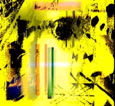

Loretta L. Lange
VIRTUAL REALITY EVANGELIST
Image by CDean
Interview with Linda Jacobson
You produced the book, Cyberarts, Exploring Art and Technology
in 1992 that was a compilation of material from various authors and
artists exploring new technologies. Would you talk a little bit about your
experiences of the last 3 years, and what your current interest and involvement
are in virtual reality?
The same year Cyberarts came out, I became involved
with D'Cuckoo.
Now that's a musical group that does large-scale interactive multimedia
performance.
How were you involved?
My involvement was to help conceive, develop, and produce a
large interactive, multimedia, performance.
How would you describe D'Cuckoo?
It's a neo-classical, post-industrial techno-tribal world funk
ensemble. In 1992 we opened up for the Grateful Dead. Also
in 1992 I did some contract work for Xerox PARC, Palo Alto Research Center,
documenting ubiquitous computing inventions. Also in 1992, I co-founded
"VERGE" the Virtual Reality Education Foundation, an organization
devoted to helping the general public understand VR technologies and applications.
We put on events at the Exploratorium in San Francisco, and present panel
discussions, host guest speakers, and hold demonstrations.
In 1993, I was involved in the launch of Wired
magazine; I wrote my book, Garage Virtual Reality, and also
started performing with D'Cuckoo as the voice of a computer-generated
puppet. I traveled around a lot in 1994 talking about garage VR. I also
was involved in the launch of the magazine, Computer Life,
and also joined the faculty of San Francisco State University in their multimedia
studies program. In 1995 I've become involved in journalism on the Web and
in writing for CD-ROM. And as of Monday (8/21/95), which I'm quite excited
about, I will be working for Silicon Graphics, my job title being, Virtual Reality Evangelist. (lindaj@vrguru.asd.sgi.com)
In your preface to Cyberarts, you state that "our industrialized
society treats art as a product, and that because art is compartmentalized
a person has to choose to be a painter, a musician, a dancer, an actor or
a designer." You go on to point out that computers have made it possible
to "let us soar beyond such self-imposed boundaries."
In the past 25 years, social movements (feminism, civil rights,
gay and lesbian liberation and multiculturalism) have challenged the dominant
white, patriarchal order in American society. As virtual reality becomes
more pervasive in our society, its potential for empowering people to create
and; choose their own identity and move outside the boundaries imposed by
self and society becomes more conceivable. Issues of identity and body politics
have been widely debated and have been a strong postmodernist focus in the
art world for the past 10 years.
Image by LLL
What role do you think VR will take in the discourse and social evolution
of identity and body politics?
In order to answer this question we really need to understand
what VR is. Fundamentally, it's a computer- human interface; it's a different
way to look at the computer. As we look at the evolution of computers, the
technology has been dominated by white patriarchy -- it's a technology.
One very forward thinking white man, Jaron Lanier who popularized the term
VR, put forth the notion that we can leave our bodies and explore new identities.
His famous example is that you could be a lobster in VR interacting with
other lobsters. Jaron is an artist first and foremost, and that brings a
key issue in -- and that is to involve artists in the discourse and development
of VR to help us in the realization of our dreams, and assist in the evolution
of identity.
Before that can happen, the technology has to evolve enough for artists
to get a hold on it. One ground- breaking work was Placeholder
-- developed by Brenda Laurel, Rob Tow, and Rachel Strickland -- all of
Interval Research. That was a system that allowed people to explore identity,
including physical identity, in a natural setting based on the Canadian
Rockies. That system cost over a million dollars to implement.
So it wasn't very widespread?
Not at all. A few hundred people experienced it and then it
was dismantled.
This was an artwork?
It was an artwork - absolutely. All the artwork that has been
done with VR has been made possible thanks to companies who are working
with artists and supporting their ideas. Of course, they can't support everyone,
and that's one reason I've been promulgating low-cost VR -- so that artists
can get involved.
Virtual reality is a transitory reality. Judith Butler writes
in Gender Trouble, "Gender ought not be constructed as
a stable identity as locus of agency from which arious acts follows; rather
gender is an identity tenuously constituted in time, instituted in an exterior
space through a stylized repetition of acts."
Do you think VR will serve to make more evident the subjective and transitory
nature of identity?
Only if people create VR environments that allow people to
experience that.
Will the perceived necessity to define gender become unimportant?
It's all how we raise our children. It's not about VR, its
up to the parents to give them notions about the lack of limitations of
gender. Do you see this leading to experiences of disembodiment?
That's where VR is right now. In most virtual worlds you exist as a hand.
In one arcade game, you are a gun, reacting with cartoon characters. Another
arcade game allows you to be a pool ball on a pool table. You are totally
disembodied, and have the experience of being a cue ball.
In her essay, The Seduction of Cyberspace, N.
Katherine Hayles discusses "The Mirror of the Cyborg," dynamically
different from the Lacanian mirror, as signification goes beyond language
and is opened up by a fuller range of sensory feedback in cyberspace. She
writes,
Cyberspace represents a powerful challenge to the customary
construction of the body's boundaries, opening them to transformative configurations
that always bear the trace of the other. The resulting disorientation can
function as a wedge to destabilize presuppostions about self and other.
Does VR have the potential for perhaps creating a simultaneous
experience of otherness and self?
Definitely. These questions are beautiful, but again, it all
depends upon what people do with VR.
So it's totally up the creators of virtual reality?
Definitely.
With economic barriers of virtual reality, how much of the
"other" in terms of race, class, and gender difference is currently
participating in VR?
Those involved in developing VR are mostly white, mostly male,
mostly middle- and upper-class people. They're not the kind of people interested
in asking questions. They are fine-with-who-they-are-already-thank-you-very-much!
The only way to get a VR experience if you're not behind the
scenes in development, is to pay a buck a minute at an arcade -- right off
the bat you're not going to allow certain people the experience just based
on the cost alone. And then there's the whole arcade environment and women.
It's very male. The arcade game-scene is really lopsided in this respect.
It seems more women have to get involved.
Yeah, you bet!
What do you think the social implications could be in a postcolonial,
global society?
Again, it really all depends on the developers and creators
of VR.
Substantial effort is going into the creation of virtual reality
tools while much less thought and importance is given to the significant,
social, cultural and political changes VR technology could engender. Peter
Drucker in his book, Post Capitalist Society, comments that
"technology itself matters less than the changes it triggers."
Morton Heilig, who has been working with the ideas of virtual reality for
40 years states in Cyberarts that the technological evolution of our society
has left us sensorially deprived; we have sterilized our environments, physically
as well as emotionally. He sees the burgeoning of virtual reality technology
as a response to this loss of basic human experience, that we realize we
need more than the industrial revolution and the information revolution.
He predicts an "experiential revolution" where virtual reality
will be a significant component.
In regard to this "experiential revolution" Heilig says: Ultimately,
the country that comes up with what I call "experiential power,"
sensorial power, emotional power, will emerge as the dominant culture.
You cited my most favorite essay in the whole book. Here it's
important to put Heilig in the context of his time, when he put forth the
notion of the "experiential revolution." This came about during
the cold war, he was a beatnik, cinematographer, a filmmaker, and a videographer.
If you take his words, "sensorial power," and "emotional
power"; and substitute"Hollywood," you've got the current
status quo. It is the U.S. that is the dominant culture today because of
the sensorial and emotional power wielded by Hollywood.
It was true then, and he was hoping and working toward the U.S. becoming
an experiential power. He was way ahead of his time, and Hollywood did not
grok the experiential idea.
Can you comment on Heilig's view in terms of present commercial
applications of VR, the realm where most people are likely to experience
virtual reality, and where the competitive and aggressive model is the norm?
The realm where most people are likely to explore the experiential
was not the movies -- Heilig wasn't able to sell his ideas to the moviemakers.
His work "Sensorama," wound up in game
arcades. Also, ironically or not, back then game arcades were where people
tried their hand at pinball and skeeball -- games of skill and chance. Today
the game arcade is the place where most people are likely to experience
VR. But, it's characterized by competition and aggression rather than skill
and chance and whimsy and pleasure and discovery.
Does Heilig's view fit the collaborative space model, where
all players contribute, but no one can dominate? How would his prediction
influence choices of identity as technology continues to evolve?
We might look at this question differently if we come to Heilig
understanding him in terms of Hollywood. It's not a collaborative model
but a theatrical model where there is an audience and performers, and all
of the senses on the part of the audience are involved in experiencing the
performer. Brenda Laurel
wrote a book in 1992, Computers as Theatre, that gets into
the real interesting theatrical work -- about using the computer as a performance
space and allowing the audience to take part in the creation of the performance.
And that puts a spin on Heilig's ideas that can really, really allow us
to play around with our choices of identity.
What is real important to me is the notion that everybody is
an artist. Sure, some people are born with more innate talent than others,
but everyone is able to express ideas and emotions artistically. It's important
to me that VR attain its lofty status as an artist's tool, an artistic medium,
one that will allow the viewer or participant to become co-creator in the
art. That alone affects our self identity. With VR you're no longer just
a consumer.
Do you envision this more in the future than now?
In the near future. But that's what D'Cuckoo is
trying to do -- give the audience new ways to react with graphics and sound.
Do you have any comments in conclusion?
Off the record -- well, on the record, I loved these questions.
Did you come up with them?
In conjunction with Geri Wittig; she gave me a lot of input.
Well, they were great. They made me look at the current situation
of VR and feel rather frustrated! I think its really important what you're
doing and that Switch be globally experienced -- that these
ideas get spread around. This is the most fun I've had doing an interview.
Thanks!